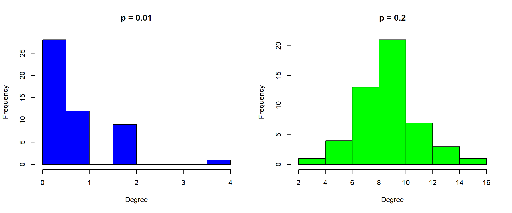

If we are going to generate a random network per phase in the evolution of \(k\), what we need to know is that the defining property is the value of the average degree: <1, 1, >1, >\(\log N\), using this limits and the relation \(\langle k\rangle = p(N-1)\) we can find a value of \(p\) for a given network order, then suppose we use \(N=100\), then
| Subcritical | Critical | Supercritical | Connected | |
|---|---|---|---|---|
| p | <0.01 | 0.01 | >0.01 | >0.047 |
then
set.seed(101)
sub_net <- erdos.renyi.game(100, 0.005, "gnp")
crt_net <- erdos.renyi.game(100, 1/99, "gnp")
sup_net <- erdos.renyi.game(100, 0.025, "gnp")
con_net <- erdos.renyi.game(100, 0.06, "gnp")Let’s plot them
par(mfrow = c(1,4))
plot(sub_net,
layout = layout.fruchterman.reingold,
vertex.color = ifelse(degree(sub_net) == 0, "Yellow", "Blue"),
vertex.label = "",
#vertex.size = 1000*degree(sub_net, normalized = TRUE),
edge.color = "grey",
main = "Subcritical")
plot(crt_net,
layout = layout.fruchterman.reingold,
vertex.color = ifelse(degree(crt_net) == 0, "Yellow", "Blue"),
vertex.label = "",
#vertex.size = 500*degree(crt_net, normalized = TRUE),
edge.color = "grey",
main = "Critical")
plot(sup_net,
layout = layout.fruchterman.reingold,
vertex.color = ifelse(degree(sup_net) == 0, "Yellow", "Blue"),
vertex.label = "",
#vertex.size = 500*degree(sup_net, normalized = TRUE),
edge.color = "grey",
main = "Supercritical")
plot(con_net,
layout = layout.fruchterman.reingold,
vertex.color = ifelse(degree(con_net) == 0, "Yellow", "Blue"),
vertex.label = "",
#vertex.size = 500*degree(con_net, normalized = TRUE),
edge.color = "grey",
main = "Connected")In the graph we can clearly identify the different phases. If you want to check the components structure, you can use the components function. In fact, for example we can check that the size of the largest component is the right one: in the critical point this should be \(\sim N^{2/3}\), then
## [1] 21.54435and from the graph we find
## [1] 22in perfect agreement. In this case we cannot use the expression we find in the notes for the supercritical region since that is only valid in a regime close to \(\langle k\rangle = 1\), however, in this case it is 2.62, rather far from it and then returns an absurd value (try using a probability around 0.011).
Let’s generate the
set.seed(101)
ex3_n1 <- random.graph.game(50, 0.01, "gnp")
ex3_n2 <- random.graph.game(50, 0.2, "gnp")Now, we can plot the degree distributions as
par(mfrow =c(1,2))
hist(degree(ex3_n1), col = "Blue", main = "p = 0.01", xlab = "Degree")
hist(degree(ex3_n2), col = "Green", main = "p = 0.2", xlab = "Degree")
The distributions clearly show that the newtork with \(p=0.01\) is in the subcritical regime while the one with \(p=2\) is in the connected one. Taking this into account, we cannot use the Poisson approximation in the first case but yes in the second, then for the \(p=0.01\) we find
N <- 50
k_min <- qbinom(0.01, N-1, 1/(N))+1
k_max <- qbinom(0.01, N-1, 1/(N), lower.tail = FALSE)
cat(sprintf("Maximum Degree: %5.0d\nMinimum Degree: %5.0d", k_max, k_min ))## Maximum Degree: 4
## Minimum Degree: 1in complete agreement with the histogram above, while for the \(p=0.2\) network we have
N <- 50
k <- mean(degree(ex3_n2))
k_min <- qpois(1/N, k) + 1
k_max <- qpois(1/N, k, lower.tail = FALSE)
cat(sprintf("Maximum Degree: %5.0d\nMinimum Degree: %5.0d", k_max, k_min ))## Maximum Degree: 16
## Minimum Degree: 5The analysis from the statistical point of view can be assessed in terms of skewness and kurtosis for the shape and once we identify this, explaining if we should use the pair (Mean, Standard Deviation) or the (Median, IQR) to describe it. From the graph we see that the second case can be described with the pair associated to the mean while the first should go with the median.
Assessing Small Worlds . For directed networks we can use a definition of the clustering coefficient due to G.Fagiolo
\[\begin{equation} C(v_i)=\frac{(A+A^T)_{ii}^3}{2[k^{tot}_i(k^{tot}_i-1) -2(A^2)_{ii}]} \end{equation}\]
use it to assess the small world property of both a Erdös-Renyi and a Waltz-Strogatz network where the number of nodes is 200 (the other properties are open and you choose them).Degree Distribution . Suppose that a network has a degree distribution that follows a geometric form \(p(k)=Ca^k\) then,
Degree Exponent . Find the Density, Average Degree, Transitivity and the number of isolated nodes in each of the following networks
You can find them in the campus online. To read the datasets do graph_from_data_frame(read.csv("route_to_csv_file")).
Then if the degree distribution is a power-law, estimate the degree exponent. Finally, generate for each case a Random, a Small-World and a Preferential Attachment Network that is the equivalent to each real network. Compare the predictions of each model with the real network. Also estimate in the preferential attachment the degree exponent.
Make a graphical representation of the networks and of the modelsLet’s load the datasets
hepth <- graph_from_data_frame(read.csv("./Data/CA-HepTh.csv"))
netsc <- read_graph("./Data/netscience.gml", format = "gml")Let’s find the metrics requested (and some others)
# Network Science
netsc_apl <- average.path.length(netsc)
netsc_acc <- mean(transitivity(netsc, type = "local"), na.rm = TRUE)
netsc_gcc <- transitivity(netsc, "global")
netsc_ad <- mean(degree(netsc), na.rm = TRUE)
netsc_den <- edge_density(netsc)
netsc_iso <- length(which(degree(netsc) == 0))
# Hep-TH
hepth_apl <-average.path.length(hepth)
hepth_acc <- mean(transitivity(hepth, type = "local"), na.rm = TRUE)
hepth_gcc <- transitivity(hepth, "global")
hepth_ad <- mean(degree(hepth), na.rm = TRUE)
hepth_den <- edge_density(hepth)
hepth_iso <- length(which(degree(hepth) == 0))
# metrics
nets_mets <- data.frame(NbIso = c(hepth_iso, netsc_iso),
Density = c(hepth_den, netsc_den),
AvClCoeff = c(hepth_acc, netsc_acc),
GlClCoeff = c(hepth_gcc, netsc_gcc),
AvPathLength = c(hepth_apl, netsc_apl))
row.names(nets_mets) <- c("Hep-TH", "Network Science")
nets_mets| NbIso | Density | AvClCoeff | GlClCoeff | AvPathLength | |
|---|---|---|---|---|---|
| Hep-TH | 0 | 0.0005328 | 0.0930076 | 0.2839997 | 5.945216 |
| Network Science | 128 | 0.0021733 | 0.8782056 | 0.6934414 | 5.823240 |
First let’s plot the frequency distributions
# Function for the plots
make_ddplot <- function(x, title = "", group = NULL){
x %>%
ggplot(aes(x = degree, y = probability)) +
geom_point(aes(color = group)) +
geom_smooth(aes(color = group), method = "lm", alpha = 0.4) +
scale_x_log10() +
scale_y_log10() +
labs(y = expression("log"("p"["k"])), x = "k", title = title) +
theme_bw() +
theme(axis.title = element_text(size = 15),
plot.title = element_text(size = 18, hjust = 0.5))
}
# Data Frame for Hep-TH
hepth_df <- data.frame(degree = 1:length(degree.distribution(hepth)),
probability = degree.distribution(hepth)) %>%
dplyr::filter(degree != 0 & probability != 0)
# Data Frame for Network Science
netsc_df <- data.frame(degree = 1:length(degree.distribution(netsc)),
probability = degree.distribution(netsc)) %>%
dplyr::filter(degree != 0 & probability != 0)
# Plots
a <- make_ddplot(hepth_df, "Hep-TH")
b <- make_ddplot(netsc_df, "Network Science")
cowplot::plot_grid(a, b)From the graphs we can identify two power laws behaviours, where in the case of the network science colalborations, the number of low degree nodes is rather supressed (low degree saturation) which would render the estimation somewhat wrong. We can follow three strategies, either use the saturation as a parameter in the power law, it would be placed at \(k \sim 3\) (\(k\sim 7\) for the Hep-TH case), remove the observations below it or simply go on and estimate the model.
If we use the last approach, we have to take into account that the slope is going to be smaller than it should, then let’s just add the saturation degree and fit (if you want to add the high-degree cutoff just estimate with a constant term, however, while this may affect the Hep-TH network it doesn’t for the Network Science). Then we find that
# Models
model_hth <- lm(log(probability) ~ log(degree + 7), data = hepth_df)
model_nsc <- lm(log(probability) ~ log(degree + 3), data = netsc_df)
# Extracting the Degree Exponents
deg_exp <- data.frame(Hep_TH = -model_hth$coefficients[2],
Network_science = -model_nsc$coefficients[2])
row.names(deg_exp) <- "Degree Exponent"
deg_exp| Hep_TH | Network_science | |
|---|---|---|
| Degree Exponent | 3.237674 | 3.106368 |
which implies that both networks are power laws in the small world regime (if you estimate with the cutoff degree, the slope for the Hep-TH networks becomes 2.18, and so a scale free network).
We can perform a partial check of the small-worldness of the networks by computing the average distance path wich should be of the order \(\log N/\log\langle k\rangle\), or we can use the exact formula with the Euler’s constant)
apl_df <- data.frame(Experimental = c(hepth_apl, netsc_apl),
Exact = c((log(gorder(hepth))+digamma(1))/log(hepth_ad) + 0.5,
(log(gorder(netsc))+digamma(1))/log(netsc_ad) + 0.5),
Approximated = c(log(gorder(hepth))/log(hepth_ad),
log(gorder(netsc))/log(netsc_ad)),
Critical = c(log(gorder(hepth))/log(log(gorder(hepth))),
log(gorder(netsc))/log(log(gorder(netsc)))),
Ultra_Small = c(log(log(gorder(hepth))),
log(log(gorder(netsc)))))
row.names(apl_df) <- c("Hep-TH", "Network Science")
apl_df| Experimental | Exact | Approximated | Critical | Ultra_Small | |
|---|---|---|---|---|---|
| Hep-TH | 5.945216 | 4.162755 | 3.908000 | 4.145128 | 2.218982 |
| Network Science | 5.823240 | 5.984363 | 5.950337 | 3.689979 | 1.997534 |
This table shows a consistent result with both networks being in the small-world region (assimilated to a random network).
Let’s define a function to compute the different metrics
net_metrics <- function(graph){
av_deg <- mean(degree(graph), na.rm = TRUE)
av_plen <- average.path.length(graph)
av_cc <-mean(transitivity(graph, "local"), na.rm = TRUE)
ccoef <- transitivity(graph)
return(c(av_deg, av_plen, av_cc, ccoef))
}with this we can find the models associated with the Hep-TH network
set.seed(101)
prob <- hepth_ad/(gorder(hepth)-1)
# ER-model
hepth_rdnet <- erdos.renyi.game(gorder(hepth), prob, "gnp")
hepth_rd_metrics <- net_metrics(hepth_rdnet)
# WS-model
hepth_wsnet <- watts.strogatz.game(1, gorder(hepth), 5, 0.28)
hepth_ws_metrics <- net_metrics(hepth_wsnet)
# BA-model
hepth_banet <- barabasi.game(n = gorder(hepth),
power = 0.9,
zero.appeal = 70,
directed = FALSE,
out.dist = c(0.05, 0.30, 0.55, 0.2))
hepth_ba_metrics <- net_metrics(hepth_banet)
# Summary
hepth_mods <- data.frame(Av_Degree = c(hepth_ad,
hepth_rd_metrics[1],
hepth_ws_metrics[1],
hepth_ba_metrics[1]),
Av_PathLength = c(hepth_apl,
hepth_rd_metrics[2],
hepth_ws_metrics[2],
hepth_ba_metrics[2]),
Average_CCoef = c(hepth_acc,
hepth_rd_metrics[3],
hepth_ws_metrics[3],
hepth_ba_metrics[3]))
row.names(hepth_mods) <- c("Experimental", "ER-model", "WS-model", "BA-model")
hepth_mods| Av_Degree | Av_PathLength | Average_CCoef | |
|---|---|---|---|
| Experimental | 10.523641 | 5.945216 | 0.0930076 |
| ER-model | 10.578718 | 4.158566 | 0.0011416 |
| WS-model | 10.000000 | 4.482231 | 0.0996643 |
| BA-model | 3.668725 | 6.672528 | 0.0003805 |
Play a bit with the values of the BA-model in order to obtain closer values to the ones on the original network.
To make a representation of the networks it is recommended to export the graphs to Gephi. Here we can find the degree distributions instead, for example, as follows
# ER_model degree distribution
deg_rd_df <- data.frame(degree = 1:length(degree.distribution(hepth_rdnet)),
ER_model = degree.distribution(hepth_rdnet)) %>%
dplyr::filter(degree != 0 & ER_model != 0)
# WS_model degree distribution
deg_ws_df <- data.frame(degree = 1:length(degree.distribution(hepth_wsnet)),
WS_model = degree.distribution(hepth_wsnet)) %>%
dplyr::filter(degree != 0 & WS_model != 0)
# BA_model degree distribution
deg_ba_df <- data.frame(degree = 1:length(degree.distribution(hepth_banet)),
BA_model = degree.distribution(hepth_banet)) %>%
dplyr::filter(degree != 0 & BA_model != 0)
# Plot
colnames(hepth_df) <- c("degree", "Experimental")
left_join(left_join(left_join(hepth_df,
deg_rd_df,
by = "degree"),
deg_ws_df,
by ="degree"),
deg_ba_df,
by = "degree") %>%
gather(Experimental, ER_model, WS_model, BA_model, key = "Model", value = "probability") %>%
mutate(Model = as.factor(Model)) %>%
ggplot(aes(x = degree, y = probability)) +
geom_point() +
geom_smooth(method = "lm", alpha = 0.4) +
facet_wrap(~ Model, nrow = 2) +
scale_x_log10() +
scale_y_log10() +
labs(y = expression("log"("p"["k"])), x = "k", title = "Degree Distributions") +
theme_bw() +
theme(axis.title = element_text(size = 15),
plot.title = element_text(size = 18, hjust = 0.5))As expected, the only distribution that follows the expected behaviour is the BA-model, however, each of the models fails as explained in the theory. You can do the same with the other network. You can also, easily estimate the degree exponent of the BA-model.
Preferential Attachment . Preferential Attachment relies in two hypotheses:
To assess this property you can take the cumulative preferential attachment function
\[\begin{equation} \pi(k) = \sum_{k_j=0}^k \frac{\Delta k_i}{\Delta t} \end{equation}\]
Can you find this function for the two real networks before? Then if you consider that
\[\begin{equation} \Pi(k_i)\approx k^\alpha \end{equation}\]
estimate the value of \(\alpha\). Is this dependency linear, sublinear or superlinear?
To find this cumulative preferential attachment function we need to have the networks at two different time moments so that we can actually find the change between \(t\) and \(t + \Delta t\). In this case we must look for those nodes whose degree have changed due to the arrival of new nodes